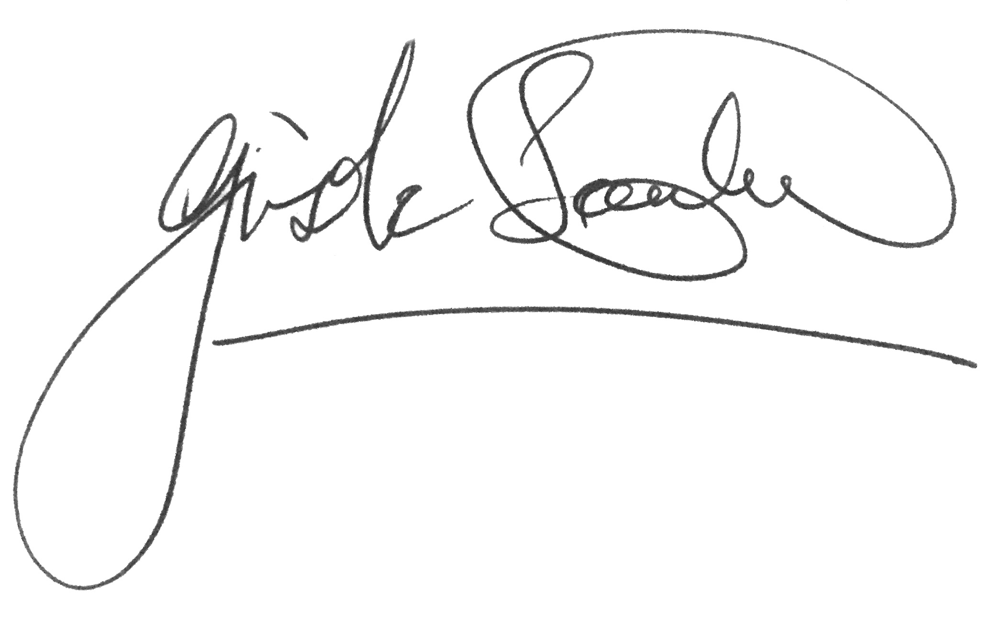

Gisèle Scanlon President-Elect, Trinity Graduate Students’ Union 2020/21
Dear all
Firstly, I want to thank you for your participation, your support for the I CARE campaign and the trust you have placed in me as your President. I am honoured and humbled to be successor to many exemplary Graduate Students’ Union Presidents and it will be a privilege and am delighted to serve as a President who can contribute to the Union’s strong history of firsts. I’d like to thank the electoral commission for facilitating the Mi-Voice online voting system which contributed to another first, when I became the first Union President in the history of the College to be elected purely through electronic vote. I deeply appreciate all who cast their votes and chose me to represent you with the highest amount of votes cast for any other GSU President to date. I believe it is absolutely no accident that we have seen such an increase in engagement and interest during a very difficult time when COVID-19 has created new challenges for us all. As we make our way through this crisis, we need to craft a positive vision for the future. I thank you for giving such a strong mandate to me with your votes and the I CARE philosophy. I have never taken a single day for granted as Vice president of the GSU, and you, the students have taught me in ways that you will never know. I want to thank all the postgraduates students who have shared their stories, ideas and concerns with me over the last four years in the GSU. Through working with you I have learnt the importance of facing challenges with new creative thinking and I have learnt the importance of caring. I truly believe that empathy and effective leadership go hand in hand. The ‘I CARE’ philosophy has been central to my campaign and will guide my presidency. There are five strands to the I CARE vision; Innovation, Community, Awareness, Research and Equality. I took these five principles into rooms and corridors all across Trinity and tested them, and the postgraduate community helped me elaborate on different aspects of it. I have been so glad to learn that I am not on my own in my thinking. I am very grateful to my campaign team, particularly Stephen Odundo who did so much to develop and help me realise the I CARE vision. I have never met anyone as motivated by the philosophy of change and he is indispensable in the work that I do. I want to express huge thanks also to those who worked hard to bring the I CARE message to postgraduate students including through the building of an engaging digital platform. I will continue to work with others and look forward to examining the issues on the table and acting on them as a team together with the other members of the GSU executive. Most importantly, I will continue to work with you. I am determined that the GSU will find new and innovative ways to involve and engage postgraduate students from seminars, and listening clinics to communal virtual GSU lunch tables. We will look at where there are bridges to be built between the different communities and find new ways to facilitate social inclusion. I have seen how fresh interest and culture connections can be used to build bridges with an investment of time and proper listening. The work we do reaches farther than any personal goal, it is more significant than any percentages or turnout figures or valid votes. I will be seeking to make change while making sure our GSU policies recognise that every decision we make, we continue to make on a shared platform. A strong shared GSU platform with more voices will help us press for more resources and action. We will also share and manage that success by engaging effectively with others such as the academic staff whom we can respect and love and work with. I want the GSU to be a key voice in the big picture and long-term thinking around the future of higher education in Ireland. Postgraduates make an impact, and I am proud of everything that we have achieved and will achieve. I will honour you by bringing the I CARE philosophy into education; to support thinkers and researchers who will bring change to the world. I care about every part of our Trinity College community including the academics, the professional staff, the workers of all kinds and most of all the students. I want every single postgraduate student to know that GSU cares about them and about their Trinity experience. I’ll be bringing my commitment online and offline, I’ll be bringing it into the centre and I’ll be visiting the margins and connecting with the research students in off campus sites like James and Tallaght. I will work to be of maximum assistance to ALL postgraduates with the Vice President Abhisweta Bhattacharjee. We will create better ways of working so that we can offer hope and support even in the context of Covid-19. My promise as President is this, I will continue to care for each and every one of you, I wish all of you well this week and say again “Thank You!”
Kind regards,
Gisèle Scanlon
